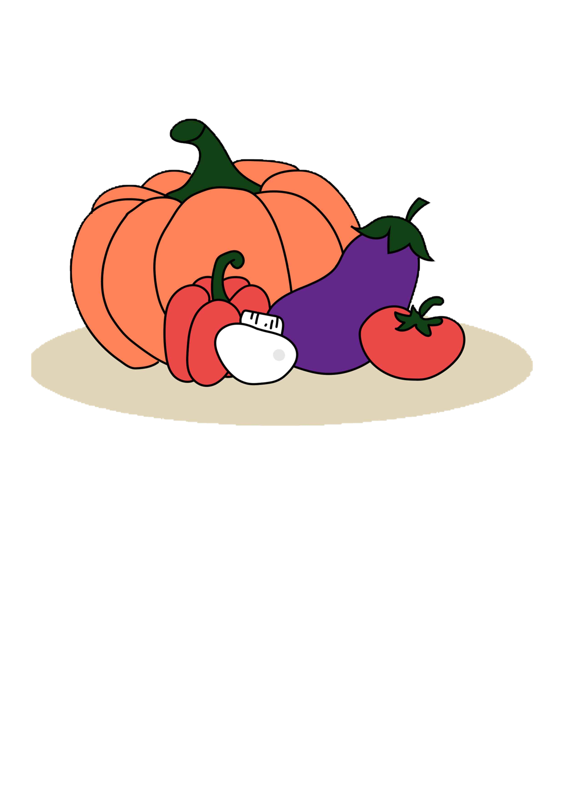

About us
We are midori sushi, a sustainable vegan restaurant established in late 2023, in Amsterdam—East.
Our seasonal menus showcase a diverse selection of flavors and textures, ensuring there‘s something for every palate. Whether you‘re a seasoned vegan or just starting your plant—powered journey, we‘ve got a tasty experience waiting for you.
What sets us apart? Everything at Midori Sushi is a hundred percent vegan, and we‘re thrilled to cater to all dietary needs. For those with celiac concerns, we offer delectable gluten—free options that promise not to compromise on taste or quality. It‘s our way of making sure everyone can savor the joy of good food, regardless of dietary preferences and—or restrictions.
Mission
Beyond serving delicious vegan sushi, we‘re here to educate and inspire.
We want our guests to understand the impact of their food choices, promoting a more conscious and mindful approach to dining.
By working with local farmers and businesses who share our commitment to sustainability, we hope to invest and give back to the Amsterdam—East community we love so much.
Sustainability
Beyond our commitment to cruelty—free cuisine, we take pride in our sustainable practices. Our packaging is eco—friendly, our energy sources are renewable, and we strive to minimize our carbon footprint at every step. As for the food, our chefs craft a menu that celebrates the finest seasonal and locally sourced ingredients, bringing you a symphony of tastes inspired by Japanese culinary traditions.
